Bathrooms
Complete bathroom renovations
Full rip-out and renovation of an existing bathroom, including preparation, plumbing, waterproofing, tiling, fitting and finishing.
287 Munster Road, Fulham SW6 6BW
Complete bathroom renovations, installations, shower rooms and en-suites, run from our shop on Munster Road. One company plans the room, deals with what we find behind the old one, and fits and finishes it.
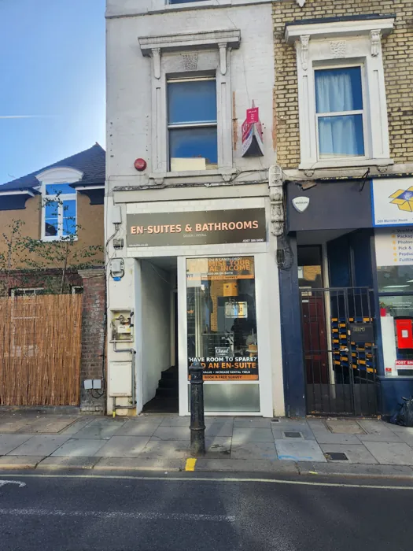
Come and see usOur shop is at 287 Munster Road, SW6 6BW. Bring photos or measurements and talk your project through. Find us on Google Maps
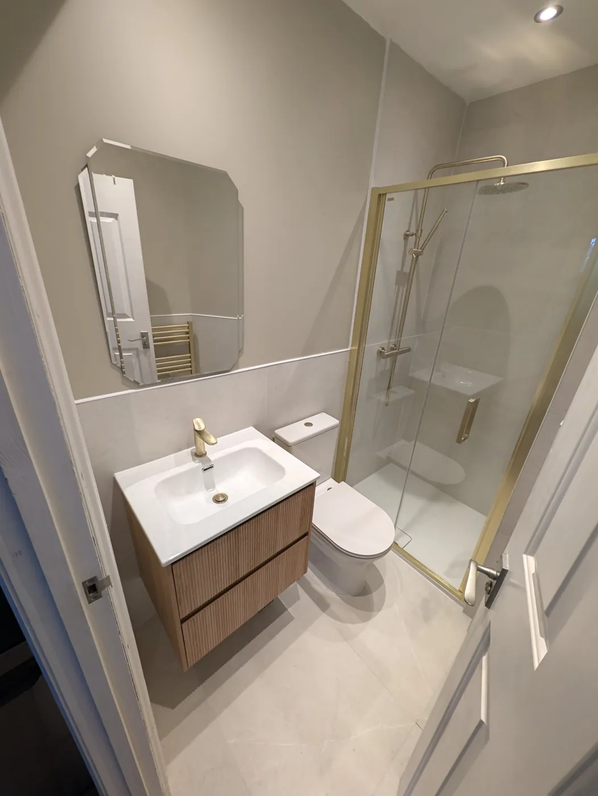
A dated shower room a few minutes from our shop, stripped back and rebuilt with a full-length shower, new studwork and a brushed-brass finish. These are photos of the actual room, before and after.
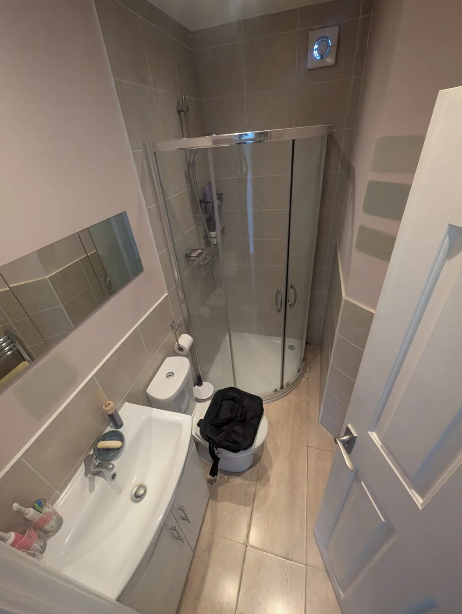
Before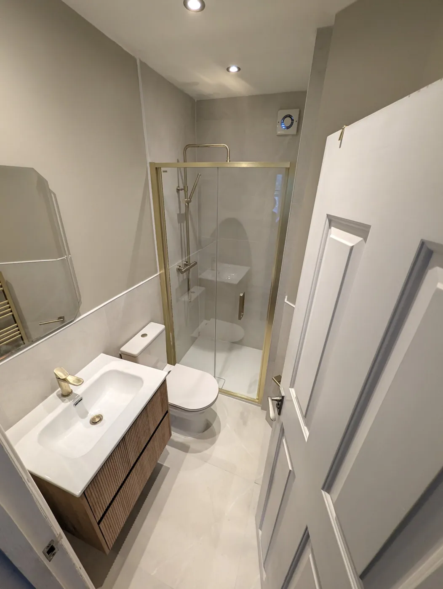
After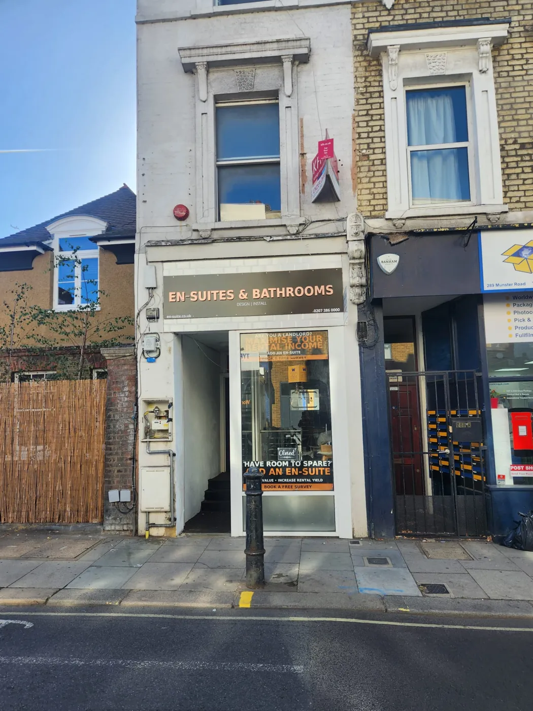
Why En-Suites & Bathrooms
We are based in Fulham, not just covering it. You can call in, talk to the person who will survey your room, and know where to find us after the job is finished.
Rip-out, plumbing, studwork, boarding, waterproofing, tiling, fitting and finishing are managed as one project, so you are not coordinating separate trades.
Old bathrooms often hide problems. On Lille Road it was failing studwork; on Rosaline Road a floor joist had been cut out under the toilet. We find these and put them right properly.
For bathroom and en-suite projects we survey the room, check drainage, water, ventilation and structure, and give you a clear written quote.
Bathroom fitters Fulham
We focus on planned projects where the design, products and practical installation details need to work together.
Full rip-out and renovation of an existing bathroom, including preparation, plumbing, waterproofing, tiling, fitting and finishing.
Bathroom fitting planned around the room, existing services, product dimensions and any layout changes needed to make the new design work properly.
Shower-led layouts planned around drainage, floor levels, screen sizes, access and the available footprint.
Private shower rooms planned around space, soil and waste routes, ventilation, water supply and the remaining usable bedroom.
Compact WC and basin spaces in suitable hall, utility or under-stairs areas where drainage and ventilation are workable.
We can work around products you already like and check dimensions, clearances, compatibility and installation requirements before they are ordered.
Bathroom renovation and installation
A complete bathroom installation involves more than fitting a new suite. For full renovations we can manage the project from rip-out and preparation through first-fix plumbing, waterproofing, tiling, sanitaryware installation and final finishing.
Before work starts we look at the layout, water and drainage, floor and wall condition, access, ventilation and the products you want to use. The aim is to agree a practical scope before the old bathroom is removed.
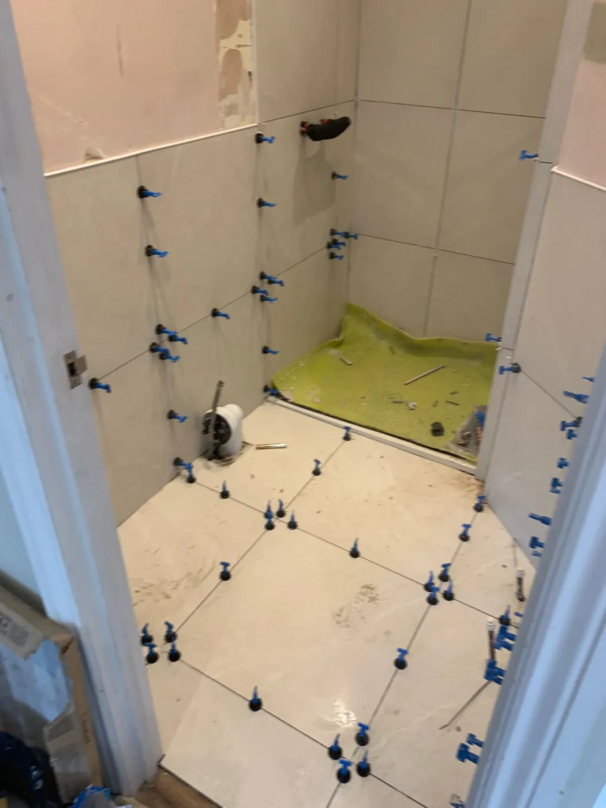
Lille Road case study, completed summer 2026
The client wanted to make much better use of the available footprint, replacing the dated curved enclosure with a full-length shower and a lighter, more contemporary finish.
Once the room was stripped out, sections of the existing walls and studwork were found to be in poor condition. We replaced the necessary studwork and formed a new side wall with a return to take the new shower tray and enclosure, before rebuilding and finishing the room around the revised layout.
The completed scheme uses light Luxe81 Delta White 595 × 595mm porcelain tiles, a Merlyn MBOX 1000mm brushed-brass bifold door, a Crosswater Central Multifunction brushed-brass shower and matching brass details, finished with Farrow & Ball paint.
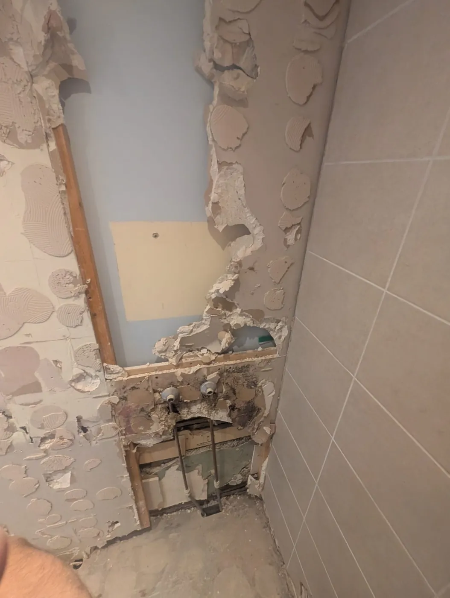
Behind the finished room
The strip-out exposed wall and studwork that could not simply be covered over. The poor sections were replaced, and a new side wall with a return was formed. Walls were lined with NoMorePly cement boards and the floor tiles were laid over a decoupling membrane to create the straight, full-length shower area the client wanted.
That preparation allowed the room to be rebuilt around the new layout rather than forcing the new fittings into the old arrangement.
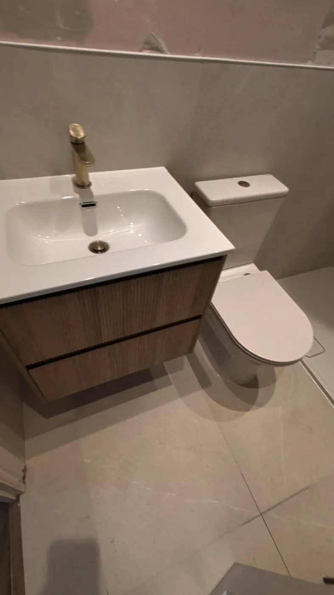
Finishing details
The brushed-brass bifold enclosure was particularly useful in this room: it gives the client the full-length shower they wanted without a hinged door projecting into the limited floor space. The ribbed vanity, matching brass tap and towel radiator continue the finish across the room, while the light tiles and Farrow & Ball paint keep the overall scheme bright.
Send us photographs and a short outline of what you would like to change, or arrange a free home survey for a suitable planned project.
More of our work nearby
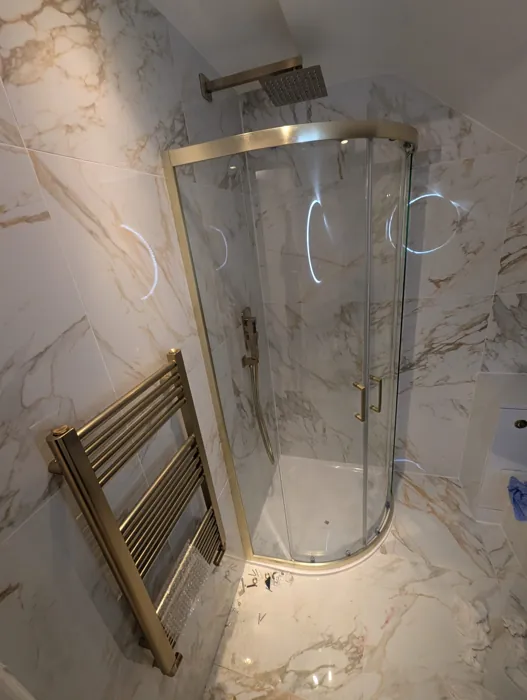
A full rebuild in a newly bought house, including replacing a floor joist a previous installer had cut out under the toilet.
See the project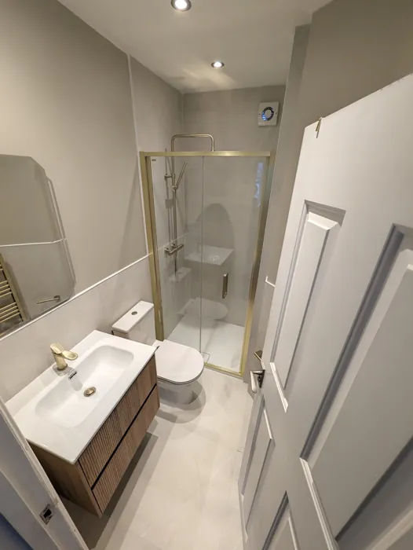
A dated shower room rebuilt around a full-length shower, with new studwork behind the finish.
See the project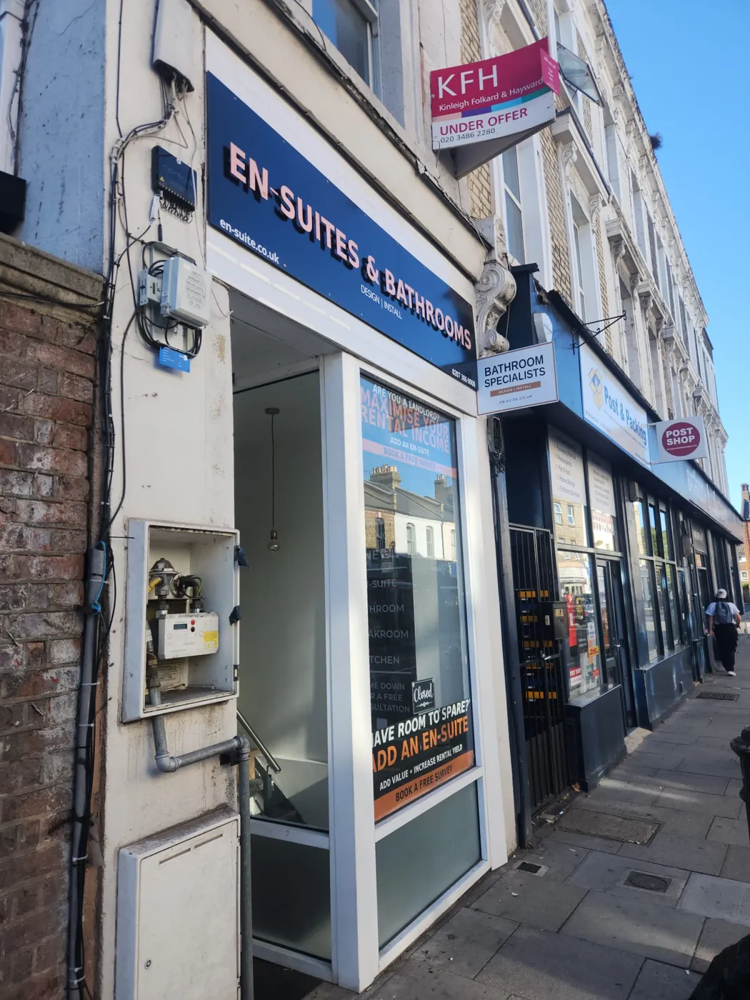
Fulham property planning
Fulham includes Victorian terraces, mansion flats, converted houses and newer apartments, and the building can affect the installation as much as the bathroom design itself.
From survey to completion
Start by sending photographs, your postcode and a short outline of what you would like to change. For suitable planned projects we arrange a free home survey.
We look at room dimensions, existing plumbing and drainage, access, layout, ventilation and the condition of the existing space.
Products, finish, practical changes and installation requirements are brought together into a clear proposal before work starts.
The work is managed as one bathroom project from preparation and first fix through tiling, final fitting and handover.
Questions
Costs vary with room size, access, specification and hidden preparation. Many complete London bathrooms sit from roughly £9,000 upwards, while more involved or premium projects can be substantially higher. A survey is needed for a real quotation.
Many complete bathroom renovations start from around 7–10 working days. Larger bathrooms, significant layout changes, additional preparation, structural work, specialist finishes or more involved installations can take longer depending on the size and scope of the project.
Yes. We install bathrooms and en-suites in Fulham. En-suites need additional feasibility checks because the waste route, ventilation, water supply and remaining bedroom space have to work before the layout is agreed.
Visit us at 287 Munster Road, Fulham, London SW6 6BW, call 0207 386 0000, or WhatsApp photographs and a brief description of your project. For suitable planned projects we can arrange a free home survey.